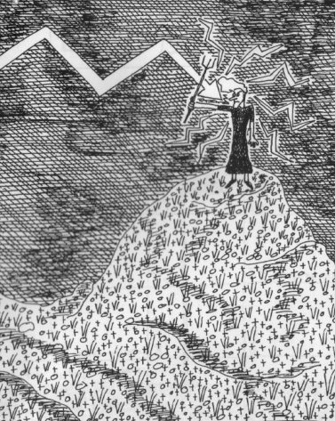

Sunday, October the 24th, 2010
back to: title, date or indexes
Waspish playwright Maud Wasp, holding a tin trident atop Pilgarlic Tor, struck by a thunderbolt.

A drawing, like almost all my drawings, from the last century. It is a detail from the 1992 Hooting Yard Calendar, wherein Maud Wasp hid behind a pseudonym.